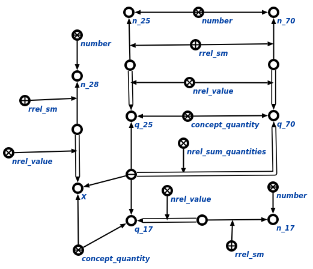

Команда вычисления математических выражений предназначена для вычисления математических выражений. Единственным аргументом команды является математическое выражение, содержащее одну и более связок математических отношений, содержащих неизвестные параметры. Результатом выполнения команды является достраивание цепочек значения для величин и цепочек идентификации для чисел, которые были неизвестными на момент начала выполнения вычислений. В ответ для конкретного математического выражения, содержащего связку отношения сумма величин*, включающую в себя неизвестный параметр X, будут добавлены все элементы, указанные в следующем фрагменте БЗ:
